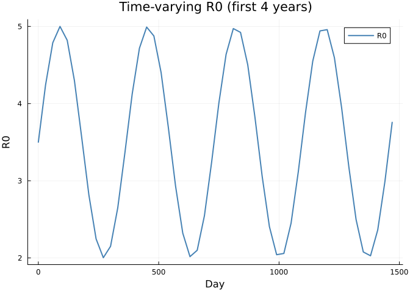
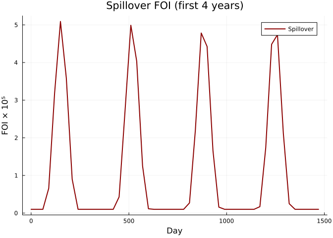
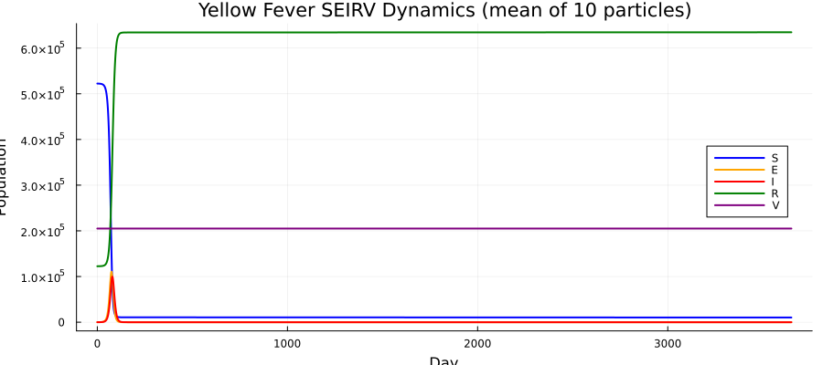
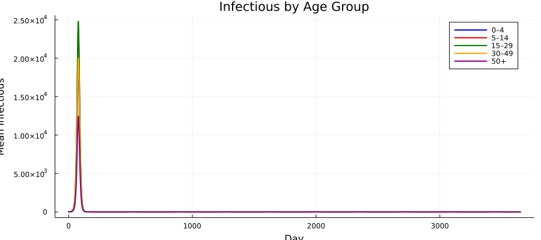
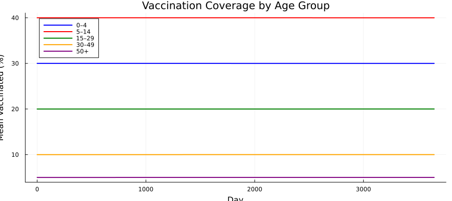
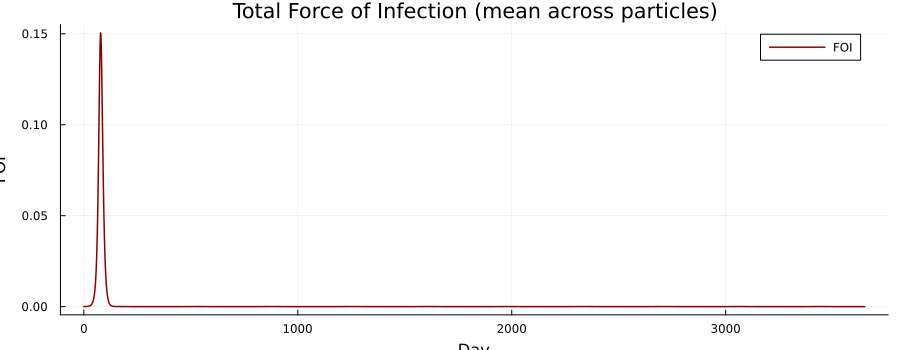
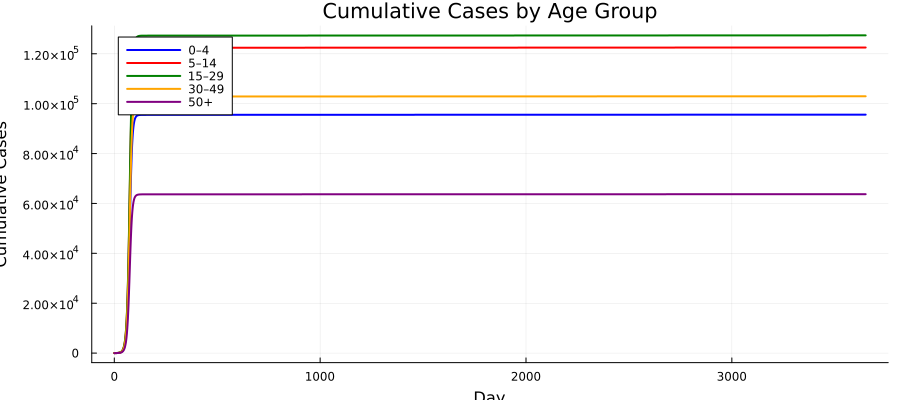
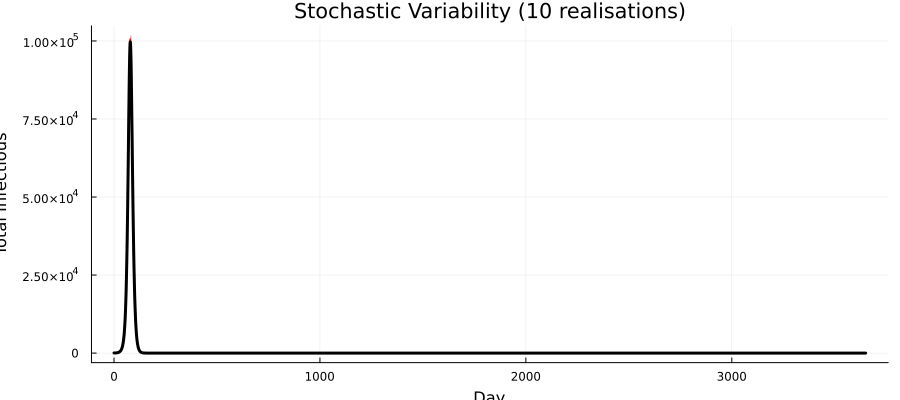
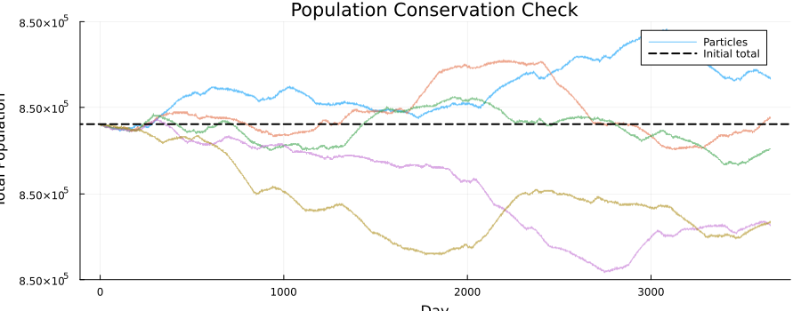
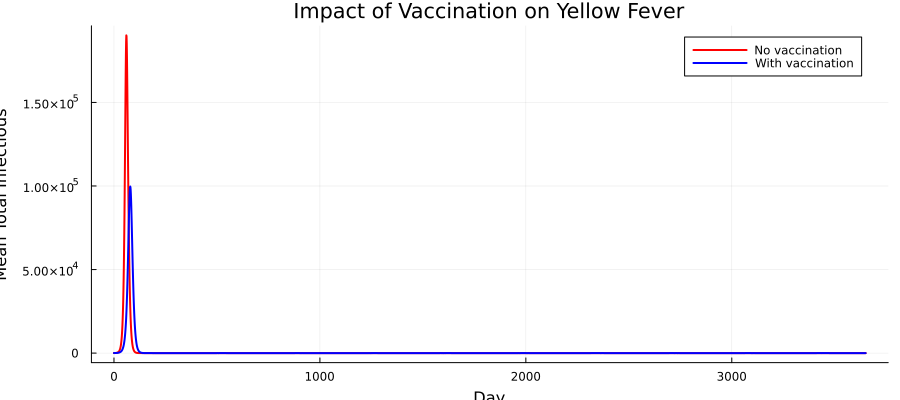

Yellow Fever SEIRV: Age-Structured Model with Spillover
Introduction
Yellow fever is a mosquito-borne flavivirus endemic in tropical Africa and South America. In addition to human-to-human (urban) transmission, sylvatic spillover from non-human primate reservoirs drives outbreaks even in partially vaccinated populations. The YF-17D vaccine provides long-lasting immunity but coverage varies by age group and year.
This vignette builds an age-structured discrete-time stochastic SEIRV model inspired by the YEP package. Key features:
| Feature | Odin construct |
|---|---|
| Age structure (5 groups) | dim(S) = N_age, 1D arrays |
| SEIRV compartments | Susceptible, Exposed, Infectious, Recovered, Vaccinated |
| Spillover FOI | interpolate() for time-varying zoonotic force |
| Time-varying R0 | interpolate() for seasonal transmission |
| Population dynamics | Aging in/out flows per age group per year |
| Vaccination | Efficacy-weighted rate from annual schedule |
| Cumulative cases | C[i] tracking new infections per step |
using Odin
using Plots
using Statistics
using RandomModel Description
Compartments
For each of $a = 1, \ldots, N_\text{age}$ age groups:
\[S_a\]
— Susceptible\[E_a\]
— Exposed (latent)\[I_a\]
— Infectious\[R_a\]
— Recovered (immune)\[V_a\]
— Vaccinated (effectively immune)\[C_a\]
— New cases this time step (reset each step)
Force of infection
\[\lambda(t) = \min\!\Bigl(1,\;\beta(t) \frac{\sum_a I_a}{P_\text{tot}} + \text{FOI}_\text{spillover}(t)\Bigr)\]
where $\beta(t) = R_0(t) / t_\text{infectious}$ and $\text{FOI}_\text{spillover}(t)$ is a time-varying zoonotic force.
Population dynamics
Each time step, individuals flow between age groups via demographic rates dP1 (inflow) and dP2 (outflow), distributed proportionally across compartments. The youngest age group receives external inflow via dP1[1] added to susceptibles.
Model Definition
yf_seirv = @odin begin
# === Configuration ===
N_age = parameter(5)
# === Dimensions ===
dim(S) = N_age
dim(E) = N_age
dim(I) = N_age
dim(R) = N_age
dim(V) = N_age
dim(C) = N_age
dim(S_0) = N_age
dim(E_0) = N_age
dim(I_0) = N_age
dim(R_0) = N_age
dim(V_0) = N_age
dim(dP1) = N_age
dim(dP2) = N_age
dim(E_new) = N_age
dim(I_new) = N_age
dim(R_new) = N_age
dim(P_nV) = N_age
dim(inv_P_nV) = N_age
dim(P) = N_age
dim(inv_P) = N_age
dim(vacc_eff) = N_age
# === Epidemiological rates ===
t_latent = parameter(5.0)
t_infectious = parameter(5.0)
rate1 = 1.0 / t_latent
rate2 = 1.0 / t_infectious
# === Time-varying R0 and spillover ===
R0_t = interpolate(R0_time, R0_value, :linear)
FOI_sp = interpolate(sp_time, sp_value, :linear)
beta = R0_t / t_infectious
# === Force of infection ===
P_total = sum(P)
I_total = sum(I)
FOI_raw = beta * I_total / max(P_total, 1.0) + FOI_sp
FOI_max = 1.0
FOI_sum = min(FOI_max, FOI_raw)
# === Population totals per age ===
P_nV[i] = max(S[i] + R[i], 1e-99)
inv_P_nV[i] = 1.0 / P_nV[i]
P[i] = max(P_nV[i] + V[i], 1e-99)
inv_P[i] = 1.0 / P[i]
# === Transitions ===
p_inf = 1 - exp(-FOI_sum * dt)
p_lat = 1 - exp(-rate1 * dt)
p_rec = 1 - exp(-rate2 * dt)
E_new[i] = Binomial(S[i], p_inf)
I_new[i] = Binomial(E[i], p_lat)
R_new[i] = Binomial(I[i], p_rec)
# === Vaccination ===
vaccine_efficacy = parameter(0.95)
vacc_eff[i] = vacc_rate[i] * vaccine_efficacy * dt
# === Demographic flows ===
dP1_rate = interpolate(dP1_time, dP1_value, :constant)
dP2_rate = interpolate(dP2_time, dP2_value, :constant)
dP1[i] = dP1_rate * 0.01
dP2[i] = dP2_rate * 0.01
# === State updates: age group 1 (youngest) ===
update(S[1]) = max(0.0, S[1] - E_new[1]
- vacc_eff[1] * S[1] * inv_P_nV[1]
+ dP1[1]
- dP2[1] * S[1] * inv_P[1])
update(E[1]) = max(0.0, E[1] + E_new[1] - I_new[1])
update(I[1]) = max(0.0, I[1] + I_new[1] - R_new[1])
update(R[1]) = max(0.0, R[1] + R_new[1]
- vacc_eff[1] * R[1] * inv_P_nV[1]
- dP2[1] * R[1] * inv_P[1])
update(V[1]) = max(0.0, V[1] + vacc_eff[1]
- dP2[1] * V[1] * inv_P[1])
# === State updates: age groups 2..N_age (aging from i-1) ===
update(S[2:N_age]) = max(0.0, S[i] - E_new[i]
- vacc_eff[i] * S[i] * inv_P_nV[i]
+ dP1[i] * S[i - 1] * inv_P[i - 1]
- dP2[i] * S[i] * inv_P[i])
update(E[2:N_age]) = max(0.0, E[i] + E_new[i] - I_new[i])
update(I[2:N_age]) = max(0.0, I[i] + I_new[i] - R_new[i])
update(R[2:N_age]) = max(0.0, R[i] + R_new[i]
- vacc_eff[i] * R[i] * inv_P_nV[i]
+ dP1[i] * R[i - 1] * inv_P[i - 1]
- dP2[i] * R[i] * inv_P[i])
update(V[2:N_age]) = max(0.0, V[i] + vacc_eff[i]
+ dP1[i] * V[i - 1] * inv_P[i - 1]
- dP2[i] * V[i] * inv_P[i])
# === Cumulative new cases per step (reset each step) ===
initial(C[i], zero_every = 1) = 0
update(C[i]) = C[i] + I_new[i]
# === Outputs ===
output(FOI_total) = FOI_sum
output(total_I) = I_total
output(total_pop) = P_total
# === Initial conditions ===
initial(S[i]) = S_0[i]
initial(E[i]) = E_0[i]
initial(I[i]) = I_0[i]
initial(R[i]) = R_0[i]
initial(V[i]) = V_0[i]
# === Parameters ===
S_0 = parameter()
E_0 = parameter()
I_0 = parameter()
R_0 = parameter()
V_0 = parameter()
vacc_rate = parameter(rank = 1)
R0_time = parameter(rank = 1)
R0_value = parameter(rank = 1)
sp_time = parameter(rank = 1)
sp_value = parameter(rank = 1)
dP1_time = parameter(rank = 1)
dP1_value = parameter(rank = 1)
dP2_time = parameter(rank = 1)
dP2_value = parameter(rank = 1)
endOdin.DustSystemGenerator{var"##OdinModel#277"}(var"##OdinModel#277"(0, [:C, :S, :E, :I, :R, :V], [:N_age, :t_latent, :t_infectious, :vaccine_efficacy, :S_0, :E_0, :I_0, :R_0, :V_0, :vacc_rate, :R0_time, :R0_value, :sp_time, :sp_value, :dP1_time, :dP1_value, :dP2_time, :dP2_value], false, false, false, true, true, Dict{Symbol, Array}()))Parameter Setup
Demographics
We use five age groups — 0–4 years, 5–14, 15–29, 30–49, and 50+ — with population sizes reflecting a typical sub-Saharan African age distribution:
N_age = 5
age_labels = ["0–4", "5–14", "15–29", "30–49", "50+"]
age_colors = [:blue, :red, :green, :orange, :purple]
pop = [150_000.0, 250_000.0, 200_000.0, 150_000.0, 100_000.0]
N_total = sum(pop)
println("Total population: ", Int(N_total))Total population: 850000Initial conditions
We seed a small number of infections in the 15–29 age group, with some pre-existing immunity and vaccination:
S_0 = copy(pop)
E_0 = zeros(N_age)
I_0 = zeros(N_age)
R_0 = zeros(N_age)
V_0 = zeros(N_age)
# Pre-existing immunity (10–30% by age)
immun_frac = [0.05, 0.10, 0.15, 0.20, 0.30]
for i in 1:N_age
R_0[i] = round(pop[i] * immun_frac[i])
S_0[i] -= R_0[i]
end
# Pre-existing vaccination (varies by age)
vacc_frac = [0.30, 0.40, 0.20, 0.10, 0.05]
for i in 1:N_age
V_0[i] = round(pop[i] * vacc_frac[i])
S_0[i] -= V_0[i]
end
# Seed 50 infections in 15–29 age group
I_0[3] = 50.0
S_0[3] -= 50.0
println("S_0: ", S_0)
println("R_0: ", R_0)
println("V_0: ", V_0)
println("I_0: ", I_0)S_0: [97500.0, 125000.0, 129950.0, 105000.0, 65000.0]
R_0: [7500.0, 25000.0, 30000.0, 30000.0, 30000.0]
V_0: [45000.0, 100000.0, 40000.0, 15000.0, 5000.0]
I_0: [0.0, 0.0, 50.0, 0.0, 0.0]Time-varying R0 and spillover FOI
R0 has a seasonal pattern peaking mid-year (wet season), while spillover FOI has occasional pulses:
n_years = 10
t_end = 365.0 * n_years
# R0: seasonal pattern (range 2–5)
R0_time = collect(0.0:30.0:(t_end + 30.0))
R0_value = [3.5 + 1.5 * sin(2π * t / 365) for t in R0_time]
# Spillover FOI: background + occasional pulses
sp_time = collect(0.0:30.0:(t_end + 30.0))
sp_value = [1e-6 + 5e-5 * max(0, sin(2π * t / 365 - π/3))^3 for t in sp_time]
plot(R0_time[1:50], R0_value[1:50], lw=2, color=:steelblue,
xlabel="Day", ylabel="R0", title="Time-varying R0 (first 4 years)",
label="R0", legend=:topright)
plot(sp_time[1:50], sp_value[1:50] .* 1e5, lw=2, color=:darkred,
xlabel="Day", ylabel="FOI × 10⁵", title="Spillover FOI (first 4 years)",
label="Spillover", legend=:topright)
Demographic rates and vaccination
# Demographic flows (simple constant rates for aging)
dP1_time = [0.0, t_end + 1.0]
dP1_value = [1.0, 1.0]
dP2_time = [0.0, t_end + 1.0]
dP2_value = [1.0, 1.0]
# Daily vaccination rates by age group
vacc_rate = [0.001, 0.0005, 0.0003, 0.0002, 0.0001]5-element Vector{Float64}:
0.001
0.0005
0.0003
0.0002
0.0001Assemble parameters
pars = (
N_age = Float64(N_age),
t_latent = 5.0,
t_infectious = 5.0,
vaccine_efficacy = 0.95,
S_0 = S_0,
E_0 = E_0,
I_0 = I_0,
R_0 = R_0,
V_0 = V_0,
vacc_rate = vacc_rate,
R0_time = R0_time,
R0_value = R0_value,
sp_time = sp_time,
sp_value = sp_value,
dP1_time = dP1_time,
dP1_value = dP1_value,
dP2_time = dP2_time,
dP2_value = dP2_value,
)(N_age = 5.0, t_latent = 5.0, t_infectious = 5.0, vaccine_efficacy = 0.95, S_0 = [97500.0, 125000.0, 129950.0, 105000.0, 65000.0], E_0 = [0.0, 0.0, 0.0, 0.0, 0.0], I_0 = [0.0, 0.0, 50.0, 0.0, 0.0], R_0 = [7500.0, 25000.0, 30000.0, 30000.0, 30000.0], V_0 = [45000.0, 100000.0, 40000.0, 15000.0, 5000.0], vacc_rate = [0.001, 0.0005, 0.0003, 0.0002, 0.0001], R0_time = [0.0, 30.0, 60.0, 90.0, 120.0, 150.0, 180.0, 210.0, 240.0, 270.0 … 3390.0, 3420.0, 3450.0, 3480.0, 3510.0, 3540.0, 3570.0, 3600.0, 3630.0, 3660.0], R0_value = [3.5, 4.240663325239966, 4.788145937413704, 4.999652752969836, 4.8200183059603035, 4.2960950722429, 3.564533349506796, 2.8161399597373116, 2.246111780872045, 2.003124258701912 … 4.958177294943594, 4.594336331129731, 3.9450692289102482, 3.1797186268403115, 2.497904203679706, 2.077457629981743, 2.0280402945925875, 2.362541287282152, 2.9937156506088316, 3.7569397162722047], sp_time = [0.0, 30.0, 60.0, 90.0, 120.0, 150.0, 180.0, 210.0, 240.0, 270.0 … 3390.0, 3420.0, 3450.0, 3480.0, 3510.0, 3540.0, 3570.0, 3600.0, 3630.0, 3660.0], sp_value = [1.0e-6, 1.0e-6, 1.0e-6, 6.5729391399279415e-6, 3.185015736396266e-5, 5.0903611113164396e-5, 3.586190273481683e-5, 8.997773041104356e-6, 1.0094308797359557e-6, 1.0e-6 … 1.7363724843438468e-5, 4.483304264781666e-5, 4.739744365514602e-5, 2.1203190270689412e-5, 2.4950486203300477e-6, 1.0e-6, 1.0e-6, 1.0e-6, 1.0e-6, 1.0e-6], dP1_time = [0.0, 3651.0], dP1_value = [1.0, 1.0], dP2_time = [0.0, 3651.0], dP2_value = [1.0, 1.0])Simulation
We run 10 stochastic particles for 10 years:
n_particles = 10
sim_times = collect(0.0:1.0:t_end)
result = simulate(yf_seirv, pars;
times=sim_times, dt=1.0, seed=42, n_particles=n_particles)
println("Result shape: ", size(result),
" (n_state+n_output × n_particles × n_times)")Result shape: (33, 10, 3651) (n_state+n_output × n_particles × n_times)State layout
# State layout follows initial() declaration order:
# C[1:5] (zero_every declared first), S[6:10], E[11:15], I[16:20], R[21:25], V[26:30]
# Outputs: FOI_total, total_I, total_pop (indices 31, 32, 33)
idx_C = 1:N_age
idx_S = (N_age+1):(2*N_age)
idx_E = (2*N_age+1):(3*N_age)
idx_I = (3*N_age+1):(4*N_age)
idx_R = (4*N_age+1):(5*N_age)
idx_V = (5*N_age+1):(6*N_age)
out_offset = 6 * N_age
println("C indices: ", idx_C)
println("S indices: ", idx_S)
println("I indices: ", idx_I)
println("V indices: ", idx_V)
println("Output offset: ", out_offset)C indices: 1:5
S indices: 6:10
I indices: 16:20
V indices: 26:30
Output offset: 30Visualization
SEIRV compartments (mean across particles)
S_total = vec(mean(sum(result[idx_S, :, :], dims=1), dims=2))
E_total = vec(mean(sum(result[idx_E, :, :], dims=1), dims=2))
I_total = vec(mean(sum(result[idx_I, :, :], dims=1), dims=2))
R_total = vec(mean(sum(result[idx_R, :, :], dims=1), dims=2))
V_total = vec(mean(sum(result[idx_V, :, :], dims=1), dims=2))
p = plot(xlabel="Day", ylabel="Population",
title="Yellow Fever SEIRV Dynamics (mean of $n_particles particles)",
legend=:right, size=(900, 400))
plot!(p, sim_times, S_total, lw=2, label="S", color=:blue)
plot!(p, sim_times, E_total, lw=2, label="E", color=:orange)
plot!(p, sim_times, I_total, lw=2, label="I", color=:red)
plot!(p, sim_times, R_total, lw=2, label="R", color=:green)
plot!(p, sim_times, V_total, lw=2, label="V", color=:purple)
p
Infectious by age group
p = plot(xlabel="Day", ylabel="Mean Infectious",
title="Infectious by Age Group", legend=:topright, size=(900, 400))
for a in 1:N_age
I_a = vec(mean(result[idx_I[a], :, :], dims=1))
plot!(p, sim_times, I_a, lw=2, color=age_colors[a], label=age_labels[a])
end
p
Vaccination coverage over time
p = plot(xlabel="Day", ylabel="Mean Vaccinated (%)",
title="Vaccination Coverage by Age Group",
legend=:topleft, size=(900, 400))
for a in 1:N_age
V_a = vec(mean(result[idx_V[a], :, :], dims=1))
coverage = V_a ./ pop[a] .* 100
plot!(p, sim_times, coverage, lw=2, color=age_colors[a],
label=age_labels[a])
end
p
Force of infection
FOI = vec(mean(result[out_offset + 1, :, :], dims=1))
plot(sim_times, FOI, lw=1.5, color=:darkred,
xlabel="Day", ylabel="FOI",
title="Total Force of Infection (mean across particles)",
label="FOI", legend=:topright, size=(900, 350))
Cumulative cases by age
cum_cases = zeros(N_age, length(sim_times))
for a in 1:N_age
daily = vec(mean(result[idx_C[a], :, :], dims=1))
cum_cases[a, :] = cumsum(daily)
end
p = plot(xlabel="Day", ylabel="Cumulative Cases",
title="Cumulative Cases by Age Group",
legend=:topleft, size=(900, 400))
for a in 1:N_age
plot!(p, sim_times, cum_cases[a, :], lw=2,
color=age_colors[a], label=age_labels[a])
end
p
Stochastic variability
p = plot(xlabel="Day", ylabel="Total Infectious",
title="Stochastic Variability ($n_particles realisations)",
legend=false, size=(900, 400))
for i in 1:n_particles
I_tot = sum(result[idx_I, i, :], dims=1)[:]
plot!(p, sim_times, I_tot, color=:red, alpha=0.4, lw=0.8)
end
I_mean = vec(mean(sum(result[idx_I, :, :], dims=1), dims=2))
plot!(p, sim_times, I_mean, color=:black, lw=3)
p
Population Conservation Check
The total population should remain approximately constant (small changes due to demographic flows and the max(0, ...) floor):
p = plot(xlabel="Day", ylabel="Total Population",
title="Population Conservation Check", legend=:topright,
size=(900, 350))
for i in 1:min(5, n_particles)
pop_total = sum(result[idx_S, i, :], dims=1)[:] .+
sum(result[idx_E, i, :], dims=1)[:] .+
sum(result[idx_I, i, :], dims=1)[:] .+
sum(result[idx_R, i, :], dims=1)[:] .+
sum(result[idx_V, i, :], dims=1)[:]
plot!(p, sim_times, pop_total, lw=1, alpha=0.6, label=(i == 1 ? "Particles" : ""))
end
hline!(p, [N_total], color=:black, lw=2, ls=:dash, label="Initial total")
p
# Quantify conservation error
pop_t = zeros(n_particles, length(sim_times))
for i in 1:n_particles
pop_t[i, :] = sum(result[idx_S, i, :], dims=1)[:] .+
sum(result[idx_E, i, :], dims=1)[:] .+
sum(result[idx_I, i, :], dims=1)[:] .+
sum(result[idx_R, i, :], dims=1)[:] .+
sum(result[idx_V, i, :], dims=1)[:]
end
println("Population at t=0: ", mean(pop_t[:, 1]))
println("Population at t=end: ", mean(pop_t[:, end]))
rel_change = abs(mean(pop_t[:, end]) - N_total) / N_total * 100
println("Relative change: ", round(rel_change, digits=4), "%")Population at t=0: 850000.0
Population at t=end: 849999.9999999919
Relative change: 0.0%Scenario: No Vaccination
We compare the epidemic with and without vaccination:
pars_novacc = merge(pars, (vacc_rate = zeros(N_age), V_0 = zeros(N_age),
S_0 = pop .- R_0 .- I_0))
result_novacc = simulate(yf_seirv, pars_novacc;
times=sim_times, dt=1.0, seed=42, n_particles=n_particles)
I_vacc = vec(mean(sum(result[idx_I, :, :], dims=1), dims=2))
I_novacc = vec(mean(sum(result_novacc[idx_I, :, :], dims=1), dims=2))
plot(sim_times, I_novacc, lw=2, color=:red, label="No vaccination",
xlabel="Day", ylabel="Mean Total Infectious",
title="Impact of Vaccination on Yellow Fever",
legend=:topright, size=(900, 400))
plot!(sim_times, I_vacc, lw=2, color=:blue, label="With vaccination")
Benchmark
using BenchmarkTools
@benchmark simulate($yf_seirv, $pars;
times=$sim_times, dt=1.0, seed=42, n_particles=10)BenchmarkTools.Trial: 221 samples with 1 evaluation per sample.
Range (min … max): 20.672 ms … 56.397 ms ┊ GC (min … max): 0.00% … 30.88%
Time (median): 21.576 ms ┊ GC (median): 0.00%
Time (mean ± σ): 22.665 ms ± 3.057 ms ┊ GC (mean ± σ): 5.03% ± 7.93%
█▆▆▇
▂▄▆█████▇▅▆▃▂▄▂▁▁▁▁▂▁▁▁▁▁▁▁▁▁▁▁▁▁▁▃▂▃▇▅▄▄▄▁▁▃▂▂▃▁▂▁▁▁▁▁▁▂▁▃ ▃
20.7 ms Histogram: frequency by time 28.2 ms <
Memory estimate: 14.87 MiB, allocs estimate: 110079.Summary
| Component | Value |
|---|---|
| Age groups | 5 (0–4, 5–14, 15–29, 30–49, 50+) |
| Compartments | SEIRV + cumulative cases |
| State variables | 30 (6 compartments × 5 age groups) |
| Time step | 1 day |
| Simulation | 10 years (3650 days), 10 particles |
| Stochastic draws | Binomial for infection, latency, recovery |
| Time-varying forcing | R0 and spillover FOI via interpolate() |
Key takeaways
Partial array updates (
update(S[1])vsupdate(S[2:N_age])) allow different aging rules for the youngest vs older age groups — inflow from births for group 1, vs aging from the previous group for groups 2+.Interpolated time-varying parameters (
R0_t,FOI_sp) provide flexible seasonal and episodic forcing without requiring the model to track time indices explicitly.max(0, ...)floors prevent negative populations from stochastic overshooting, a common issue in discrete-time models with large time steps or small compartments.Population dynamics (demographic aging flows) can create small conservation errors when combined with the max-floor, but the relative change remains negligible over the simulation period.
| Step | API |
|---|---|
| Define model | @odin begin … end with 1D arrays and interpolation |
| Simulate | simulate(gen, pars; times, dt, seed, n_particles) |
| Scenario comparison | Re-run with vacc_rate = zeros(N_age) |